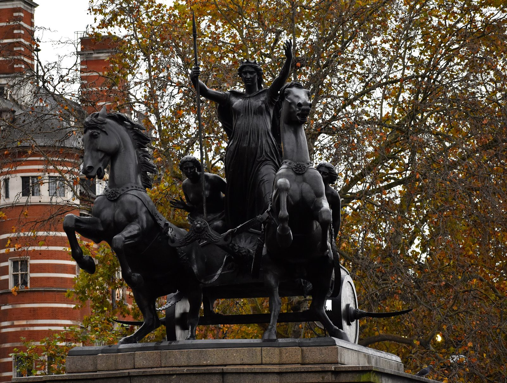
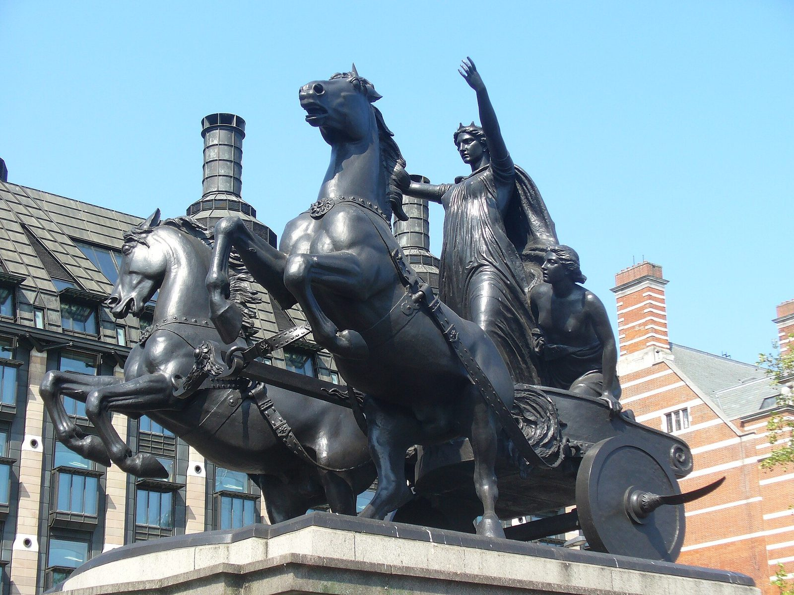
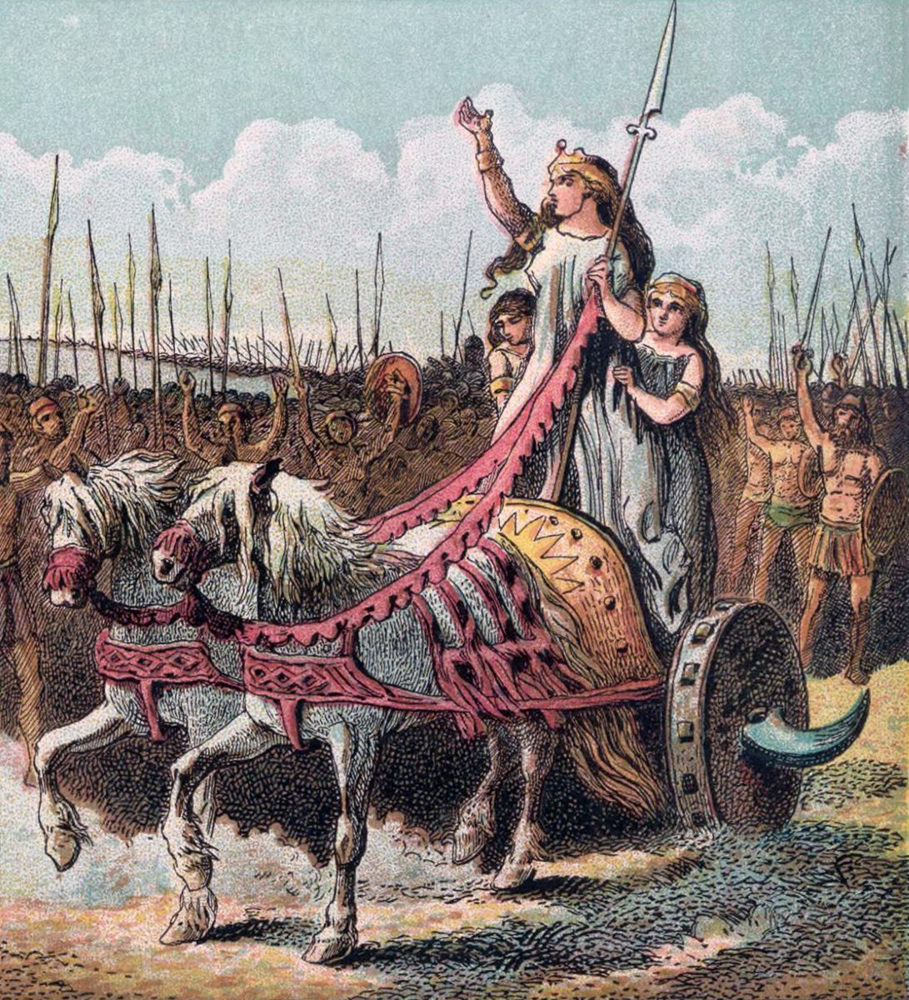
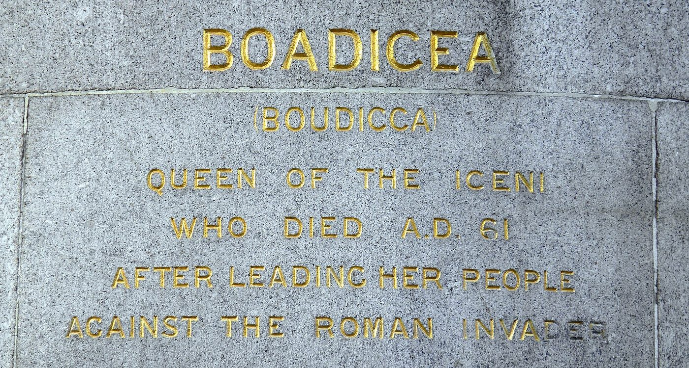
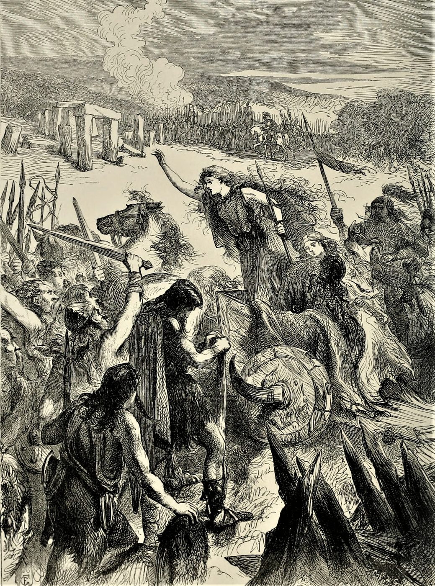

Unit 4 · Boudicca · Lesson 13
Boudicca remade: representations in the Victorian period
An Iceni queen who fought an empire became, about 1,800 years later, a heroine of another one. How, and why?
Year 11 Ancient History · Present with → or space · Read on a phone with R

Review · books closed · 6 minutes · press K for the timer
Six questions from Lessons 1–11
- What did Prasutagus’s will do, and what happened after his death? (Lesson 5) He made the emperor his heir along with his two daughters, hoping to keep his kingdom safe. ‘But the reverse was the result’: his kingdom was plundered by centurions and his family mistreated (Annals 14.31).
- About how long after the revolt did Tacitus write the Annals, and Dio his history? Why does the gap matter? (Lesson 4) Tacitus about 55 years later; Dio about 150 years later, in the early 3rd century CE. Both relied on earlier accounts, and each wrote for readers of his own time.
- Describe the ground where, Tacitus says, Suetonius chose to fight the final battle. (Lesson 9) ‘a position approached by a narrow defile, closed in at the rear by a forest’, with ‘an open plain’ in front (Annals 14.34).
- Who was Julius Classicianus, and what did he tell Rome? (Lesson 11) The new procurator, Catus’s successor. At odds with Suetonius, he wrote that ‘no cessation of fighting must be expected, unless Suetonius were superseded’ (Annals 14.38).
- Who was Petronius Turpilianus, and how do Tacitus’s two verdicts on him differ? (Lesson 11) The next governor. In the Agricola (16) he was sent ‘to initiate a milder rule’ and ‘put an end to old troubles’; in the Annals (14.39) he ‘veiled this tame inaction under the honourable name of peace’.
- Writing · name the agent: “Londinium was abandoned.” (Lesson 9) “Suetonius Paulinus abandoned Londinium.” He ‘resolved to save the province at the cost of a single town’ (Annals 14.33). Naming him shows a decision, not an accident.
Mark your own answers in a different colour. Which question did you find hardest?
Learning intentions and success criteria · 2 minutes
Today’s goals
- analyse representations of Boudicca in the Victorian period
- write a cohesive paragraph that links and weighs evidence
- explain three Victorian representations and their contexts
- distinguish the Victorian images from Cowper’s Georgian ode and the ancient evidence
- build cohesion with reference chains and given–new flow
Syllabus outcomes: AH-11-01 explains continuity and change in the ancient world · AH-11-06 explains differing interpretations and representations of the past · AH-11-07 communicates historical understanding, applying historical knowledge, terms and concepts. Life Skills: AH-LS-10 compares representations of the past · AH-LS-11 communicates information about the past using historical terms and concepts.
Note-making · the routine for the whole course
How to structure your notes
questions and key terms, written after
short phrases, arrows (→ leads to), abbreviations (c. = about; Vic. = Victorian)
- 1A new lesson, a new pageA cue column about a quarter of the page wide; title and date at the top; room for a summary at the bottom.
- 2Listen and look, then writeDon’t copy while a picture is being explained. Phrases, not sentences; a date for every representation.
- 3Write your own notes at each ✎ checkpointThen compare with the model notes, one row at a time. Add what you missed in a second colour.
- 4Write the cue questions afterwardsUse exam verbs: describe, explain, analyse. To revise, cover your notes and answer the cues.
- 5Finish with a three-sentence summaryTwo checkpoints today: the names and the statue · Victorian representations. The gallery grid goes in your booklet.
Key vocabulary · add to the unit word wall
Words for today
| From the unit list | Meaning |
|---|---|
| Interpretation / representation | A historian’s evidence-based explanation of the past / a depiction of the past shaped by its maker’s time and purpose. |
| Georgian / Victorian period | In Britain, 1714–1830 (George I to George IV) / the reign of Queen Victoria, 1837–1901. |
| Boadicea | The usual spelling of her name from the Renaissance to the early 20th century. |
| Composed speech | A speech written by an ancient historian for a character, showing the historian’s views. |
| Cohesion | The links that join sentences into one argument: reference chains (‘this image… such representations’) and given–new flow. |
| Added today | Meaning |
|---|---|
| Reference chain | Words that point back to the same idea, sentence after sentence: Dio’s Boudicca → this image → such portraits. |
| Given–new | Each sentence starts with something already mentioned (given) and ends with something new. |
| Summarising noun | A noun that sums up the last idea so the next sentence can build on it: this image, such a prophecy. |
| Plinth | The block a statue stands on. |
| Scythed chariot | A chariot with curved blades fixed to its wheels. |
1 · The statue and the names · I do — explained once, then used all lesson
One woman, three names, and two periods
- Boudicca
- the syllabus’s spelling: the name in the Latin text of Tacitus (Annals 14.31, 14.35). Church and Brodribb’s translation prints Boudicea; Cary’s translation of Dio, Buduica.
- Boudica
- preferred by many modern scholars. However it is spelt, the name is linked to a Celtic word for ‘victory’: it may have been a title, not her birth name.
- Boadicea
- the usual spelling from the Renaissance to the early 20th century, so it is the Victorian name, and the one on Thornycroft’s statue. Probably a copying or printing error for Tacitus’s form.
1 · The statue and the names · I do — think aloud on one representation · then cold call
Thomas Thornycroft’s ‘Boadicea and Her Daughters’

- 1What it showsA crowned queen in a two-wheeled chariot, spear in her right hand, left arm raised; a daughter crouching on each side; two rearing horses, no reins; a scythe on each wheel.
- 2When and why it was madeBegun by Thornycroft in 1856, in Victoria’s reign, with Prince Albert’s interest and support; cast after his death (1885); installed by Westminster Bridge, across the road from Parliament, in 1902, the year after Victoria died.
- 3What it cannot be evidence ofWhat Boudicca looked like or how the Iceni fought: the only descriptions of her are Roman. It shows how she was imagined about 1,800 years later.
Which details come from an ancient writer, and which did the sculptor add?
From the writers: the chariot with her daughters (Tacitus: ‘with her daughters before her in a chariot’, Annals 14.35) and the spear (Dio 62.2). Added: the crown, the scythes, the rearing horses with no reins, the pose: neither writer mentions a crown or scythes.
Notes checkpoint 1 of 2
The names and the statue
2 · The gallery · We do — in pairs, about 1½ minutes a station · fill in your grid as you go
Gallery stations 1–3: two poems and a history for children
When the British warrior queen,
Bleeding from the Roman rods,
Sought with an indignant mien,
Counsel of her country’s gods, …
Regions Caesar never knew,
Thy posterity shall sway,
Where his eagles never flew,
None invincible as they.
William Cowper, ‘Boadicea, An Ode’, in his Poems (London, 1782), stanzas 1 and 8. In stanzas 3–8 a Druid prophesies to the queen.
Look for: who speaks, and what future he promises. Which period?
… Boadicea, in a war-chariot, with her fair hair streaming in the wind, and her injured daughters lying at her feet, drove among the troops, and cried to them for vengeance on their oppressors, the licentious Romans.
Charles Dickens, A Child’s History of England, chapter I, a history for children in his magazine Household Words, 25 January 1851 (in parts, 1851–53). Beside it, from a different book: a colour print for children, Boadicea and Her Army (London, 1868).

Look for: what Dickens, and then the print, add to Tacitus’s story.
Far in the East Boädicéa, standing loftily charioted,
Mad and maddening all that heard her in her fierce volubility,
Girt by half the tribes of Britain, near the colony Cámulodúne, …
Thine the myriad-rolling ocean, light and shadow illimitable,
Thine the lands of lasting summer, many-blossoming Paradises,
Thine the North and thine the South and thine the battle-thunder of God.
Alfred Tennyson, ‘Boädicéa’, in Enoch Arden, etc. (London, 1864), lines 3–5; then the song of the ‘terrible prophetesses’ she says she overheard, about Britain’s future.
Look for: the words that make her frightening, and what the song promises Britain.
Images: J. M. Kronheim (Public domain). Full details on the last slide.
2 · The gallery · We do — in pairs · stations 4–6 · fill in your grid as you go
Gallery stations 4–6: a statue, its plinth, and an ancient Roman
Thomas Thornycroft, bronze, by Westminster Bridge, London, across the road from the Houses of Parliament. Begun in 1856, in Victoria’s reign; put up in 1902, the year after she died.
Look for: what she holds and wears, who is with her, and the wheels.

BOADICEA
(BOUDICCA)
QUEEN OF THE ICENI
WHO DIED A.D. 61
AFTER LEADING HER PEOPLE
AGAINST THE ROMAN INVADER
Front of the plinth. On the river side, cut later (secondary sources say 1903), two lines of Cowper’s ode:
REGIONS CAESAR NEVER KNEW
THY POSTERITY SHALL SWAY
Look for: who ‘the Roman invader’ is, and whose ‘posterity’ will rule.
… all this ruin was brought upon the Romans by a woman, a fact which in itself caused them the greatest shame.
In stature she was very tall, in appearance most terrifying, in the glance of her eye most fierce, and her voice was harsh; a great mass of the tawniest hair fell to her hips; around her neck was a large golden necklace … She now grasped a spear to aid her in terrifying all beholders …
Cassius Dio (about 155–235 CE), a Roman senator writing about 150 years after the revolt, Roman History 62.1–2 · trans. E. Cary (Loeb, 1925). Cary spells her Buduica.
Look for: what Dio wants his Roman readers to feel about her.
Images: Paul Walter (CC BY 2.0) · Carole Raddato (CC BY-SA 2.0). Full details on the last slide.
2 · The gallery · We do — check your grid, one row at a time · 2 minutes
The gallery grid: six representations side by side
Test three explanations for the Victorian image of her: empire · a reigning queen · interest in British origins.
| Station | Date · period | How it shows her | Which explanation fits? | Close to the ancient evidence? |
|---|---|---|---|---|
| 1 Cowper | 1782 · Georgian | a wronged queen who hears a Druid’s prophecy | empire: her descendants will rule ‘Regions Caesar never knew’ | partly: the rods echo Tacitus’s scourging (14.31); the prophecy is Cowper’s |
| 2 Dickens | 1851 · Victorian | a heroic mother in a war-chariot, ‘fair hair streaming in the wind’ | British origins: a national story for children | close to Tacitus’s outline, but adds ‘by order of Catus’, drops his ‘about’, and gives her fair hair |
| 3 Tennyson | 1864 · Victorian | ‘Mad and maddening’: a fury who curses Rome | empire: the song promises Britain ‘the myriad-rolling ocean’ | close in details (the fallen statue of Victory, the Tamesa, Prasutagus); the speech and song are his |
| 4 Statue | begun 1856 · Victorian; installed 1902 | a crowned warrior and mother, spear raised, in a scythed chariot | a reigning queen: Albert backed it; its supporters saw ‘a tribute to their own Queen Victoria’ | partly: the chariot and daughters (Tacitus), the spear (Dio); the crown and scythes are added |
| 5 Plinth | 1902, lines added later · after Victoria | the leader of ‘her people’ against ‘the Roman invader’ | empire and British origins: a resister, beside Cowper’s promise of an empire | partly: ‘A.D. 61’ follows Tacitus’s consuls, but historians say 60 or 61 |
| 6 Dio | early 3rd century CE · ancient | very tall, ‘most terrifying’, fierce-eyed, tawny-haired, with a spear | none: a Roman disaster caused ‘by a woman’ (62.1) | ancient, but composed about 150 years later for Roman readers |
2 · The gallery · We do — think, pair, then cold call · 2 minutes
Two questions about the gallery
Which representation tells us most about its maker?
The statue with its plinth, or Tennyson’s poem: each adds things no ancient writer says (a crown and scythed wheels; a prophecy of British power), and the plinth adds Cowper’s promise of lands ‘Caesar never knew’. They show Victorian and Edwardian pride in empire and in a queen, not evidence about the Iceni. Any choice works if the reason shows what its maker added.
Which is closest to the ancient evidence?
Dickens follows Tacitus’s outline most closely (the scourging, the daughters, the chariot before the battle, ‘seventy thousand’, poison), and Tennyson borrows Tacitus’s omens; but each adds something and drops something. Dio is ancient evidence himself, yet he too composed his portrait, about 150 years later, for Roman readers.
So every station is a representation: each tells us about its maker’s time, and none is a photograph of 60 or 61 CE.
Notes checkpoint 2 of 2
Victorian representations of Boudicca
3 · You do · Writing focus · 7 minutes · I do → We do → apply
Writing focus: start each sentence from what is given
A reference chain points back with a summarising noun (this image, such portraits). Given–new: put the known idea first and the new idea last, so the next sentence can pick it up.
Worked example · written for this lesson, on Dio’s portrait (a parallel source, not today’s question)
Dio gives Boudicca “the tawniest hair” and a glance “most fierce”. This image of a fearsome barbarian queen may have suited a writer for whom defeat by a woman was “the greatest shame”. Such portraits reveal their makers more than their subject.
New: the evidence, Dio’s description (62.2)
Given → new: This image sums up sentence 1; the new idea is Dio’s purpose (62.1)
Given → new: Such portraits widens the chain into a judgement
Put the three sentences in order so that each begins with what is given.
ASuch a speech is better evidence of Tacitus’s purpose than of Boudicca’s own words.
BTacitus gives Boudicca a speech in which she fights “as one of the people”, avenging “lost freedom” (Annals 14.35).
CThis portrait of a wronged leader may suit a senator who blames Rome’s own officials for the revolt.
B opens with new information: the speech. C begins with what is given, This portrait, and adds Tacitus’s purpose. A sums up both, Such a speech, and ends on the judgement. Start with A or C and the reader asks: which speech? which portrait? And B → A → C breaks the flow: A’s ‘Tacitus’s purpose’ is only given once C has introduced it.
After your first sentence, begin your next sentences with what is given: a summarising noun that points back (“This [noun] …”, “Such [noun] …”) or a linking connective (“By contrast, …”). When you finish, underline your chain. Your Writing toolkit (booklet pages 3–4): connectives by function.
3 · You do · 17 minutes · deconstruct first · then write · press K for the timer
Explain why Boudicca was represented as she was in the Victorian period.
Deconstruct it: what does this question ask you to do?
- Verb
- explain: ‘Relate cause and effect. Make the relationships between things evident. Provide why and/or how.’ (NESA, Glossary of key words) So: why, with the links stated
- Topic
- why Victorians showed her as they did: the causes behind the images
- Limits
- the Victorian period, 1837–1901 (Dickens, Tennyson, the statue begun 1856); Cowper only as background; Dio or Tacitus to weigh against
- Do
- link two representations to their time, weigh one against Dio or Tacitus, say which reason mattered most, and keep a reference chain
- Open with a sentence that answers why.
- Link two Victorian representations to their time.
- Weigh one against Dio or Tacitus: what does it keep, add or change?
- Begin later sentences with This … or Such …, and underline your chain.
Use your grid. Frame: “This [noun] …; Such [noun] …; By contrast, …” Summarising nouns:
Check first: which three stations cannot be your Victorian representations, and why?
Cowper’s ode (1782) is Georgian, so it is background only; Dio is ancient, so he is what you weigh a Victorian image against; and the plinth’s inscriptions (1902 and later) came after Victoria’s death.
Victorian Britain celebrated Boadicea’s resistance to an invading empire while its own empire was occupying Aboriginal Country, including Gumbaynggirr Country, where cedar-getters and settlers arrived from about 1840 and Gumbaynggirr people resisted them. Analyse how an image of resistance can serve an empire, and whose resistance it leaves out.
Use only the sources your teacher gives you for Gumbaynggirr history.
3 · You do · after you write · compare yours with a model
A model answer: why the Victorians remade Boudicca
Victorian writers and artists represented Boudicca as a heroic British queen and mother mainly because her story could be told as the beginning of Britain’s own greatness, in an age of empire with a queen on the throne. In Tennyson’s ‘Boädicéa’ (1864), the prophetesses she overhears promise Britain ‘the myriad-rolling ocean’ and ‘the lands of lasting summer’, a future no ancient writer gives her. This prophecy turns a defeated rebel into the ancestor of an empire. Thornycroft’s statue, begun in 1856 with Prince Albert’s support, makes a similar link in bronze: a crowned queen with a spear and her two daughters, in whom the statue’s supporters later saw ‘a tribute to their own Queen Victoria’. Such images keep some ancient details but change their meaning. Tacitus does place her ‘with her daughters before her in a chariot’ (Annals 14.35), and Dio gives her a spear (62.2), but neither mentions a crown or scythed wheels, and Dio’s ‘most terrifying’ queen belongs to a Roman story of ‘the greatest shame’ (62.1), not to a British story of pride. Of these reasons, empire probably mattered most, since it explains both Tennyson’s prophecy of British power and why a rebel against Rome could become a heroine for a nation with an empire of its own, so these representations reveal more about Victorian Britain than about the Iceni queen.
Finish your notes If time · or at home
Summary: three sentences
- Which representations of Boudicca are Victorian, and which are not?
- How did the Victorian representations change her?
- What can they tell a historian, and what can they not?
Dickens’s history for children (1851), Tennyson’s ‘Boädicéa’ (1864) and Thornycroft’s statue (begun 1856) are Victorian, whereas Cowper’s ode (1782) is Georgian, the plinth’s inscriptions date from after Victoria’s death, and Dio’s description is ancient. The Victorian representations turned a defeated rebel into a crowned heroine and mother, adding details no ancient writer gives, such as a crown, scythed wheels and prophecies of British power. They are good evidence of how Victorians saw their own nation and queen, but not of what Boudicca looked like or did.
Check for understanding · hinge question · hold up your A, B, C or D card on “3, 2, 1, show”
Which is from the Victorian period?
- AWilliam Cowper’s “Boadicea: An Ode”
- BCassius Dio’s description of Buduica
- CTacitus’s Agricola, chapter 16
- DAlfred Tennyson’s “Boädicéa”
Published in 1864, in Victoria’s reign (1837–1901). A is Georgian: Cowper published it in 1782, under George III, even though its lines were later cut on the plinth. B and C are ancient: Dio wrote in the early 3rd century CE, about 150 years after the revolt; Tacitus wrote the Agricola in 98 CE.
Exit ticket · 4 minutes · before you leave
Your reference chain
- Underline your reference chain: this or such with a summarising noun.
- On your ticket, copy one sentence that begins with given information, and write what its first words point back to.
A sentence that opens with a summarising noun (This prophecy, Such images, This statue) which clearly names something in the sentence before, and ends on a new idea. The note says exactly what it points back to (for example, “the song in Tennyson’s poem”). Not a bare This shows or It, which leaves the reader guessing.
Then check yourself against today’s three “I can” statements. Next lesson: the unit checkpoint and planning your extended response.
Practice and review · 1 of 5 · true, false, justify
True or false? Justify your answer
- 1Cowper’s ode is a Victorian poem. False — published in 1782, under George III: Georgian, 55 years before Victoria’s reign began.
- 2Thornycroft’s statue was begun and put up in Victoria’s reign. False — begun in 1856, in her reign, but installed in 1902, the year after she died.
- 3Tacitus puts Boudicca in a chariot with her daughters. True — ‘with her daughters before her in a chariot’ (Annals 14.35).
- 4Dio describes Boudicca wearing a crown. False — he gives her height, fierce eyes, tawny hair, a golden necklace, a cloak and a spear (62.2), but no crown.
- 5Dickens follows Tacitus closely but drops one of his hedges. True — Tacitus says ‘About seventy thousand’ fell, ‘it appeared’; Dickens writes ‘seventy thousand Romans’.
- 6‘Boadicea’ was the usual spelling of her name in the Victorian period. True — it was usual from the Renaissance to the early 20th century, and it is the name on Thornycroft’s plinth.
Practice and review · 2 of 5 · writing · cohesion
Fix the chain
Rewrite these three sentences so that sentences 2 and 3 begin with what is given:
“Kronheim made a colour print of Boadicea for a children’s history in 1868. A crown and long fair hair are in it. This shows a lot.”
In 1868 a children’s history printed J. M. Kronheim’s colour picture of Boadicea. This picture gives her a crown and long fair hair, details that no ancient writer combines. Such a heroine, made for young readers, suggests that the picture’s makers wanted children to admire her.
Write three sentences about the plinth. Sentence 2 starts “This inscription …”; sentence 3 starts “Such …”.
The front of the plinth honours Boadicea as a queen who led ‘her people against the Roman invader’. This inscription makes her a defender of her homeland, while Cowper’s lines on another side promise that her ‘posterity shall sway’ lands Caesar never knew. Such a pairing honours resistance to one empire and the growth of another.
Practice and review · 3 of 5 · analyse a representation
Read a Victorian picture

Analyse this picture as a representation: what does it show that no ancient writer says, and what might that suggest about its makers? Use a reference chain.
The picture shows Boadicea urging on her warriors from a chariot with a scythed wheel, while standing stones like Stonehenge rise behind them. Neither Tacitus nor Dio mentions such a place, so this detail is the artist’s own. Such a background ties her to the most famous monument of ancient Britain, which may suggest that its makers wanted readers to see her as part of the nation’s deep past. This choice, in the opening picture of a national history, is evidence of how Victorians imagined British origins, not of the revolt itself.
Practice and review · 4 of 5 · extension · analyse
An image of resistance, and an empire
Marina Warner has argued that Boudica, like Britannia can now be seen as an imperial icon, an ironic fate for such an anti-imperialist woman.
Martha Vandrei (King’s College London), conference paper on Boudica and the Victorian female hero, University of Essex (2009), summarising the historian Marina Warner
Victorian Britain celebrated Boadicea’s resistance to an invading empire while its own empire was occupying Aboriginal Country, including Gumbaynggirr Country, where cedar-getters and settlers arrived from about 1840 and Gumbaynggirr people resisted them. Analyse how an image of resistance can serve an empire, and whose resistance it leaves out.
Use only the sources your teacher gives you for Gumbaynggirr history.
- Uses the plinth: she led ‘her people against the Roman invader’, yet Cowper’s lines on another side promise that her descendants will rule lands Caesar never knew.
- Explains how: resistance to Rome is made the start of a British nation that later ruled others.
- Names whose resistance the image leaves out, using the respectful terms Country and Gumbaynggirr people.
- Attributes every claim about Gumbaynggirr history to the source it comes from, and does not speak for Community.
- Uses analyse: parts, how they relate, and what follows.
Practice and review · 5 of 5 · cover your notes and answer from memory
Quick checks
- Why are there three spellings of her name? Boudicca is the spelling in the Latin text of Tacitus (and the syllabus’s); Boudica is preferred by many modern scholars; Boadicea was usual from the Renaissance to the early 20th century, probably from a copying or printing error.
- Name three Victorian representations of Boudicca, with their dates. Dickens’s A Child’s History of England (1851); Tennyson’s ‘Boädicéa’ (1864); Thornycroft’s statue (begun 1856). Also Kronheim’s print (1868).
- Why is Cowper’s ode not Victorian, and how did it reach Thornycroft’s statue? It was published in 1782, under George III (Georgian). Two of its lines were later cut on the river side of the statue’s plinth (secondary sources say 1903).
- What did Thornycroft add that no ancient writer gives her? A crown, scythed wheels and rearing horses with no reins. The chariot with her daughters is Tacitus’s; the spear is Dio’s.
- What three explanations did we test for the Victorian image of her? An age of empire; a reigning queen (Victoria, linked to her by the meaning ‘victory’); interest in British origins.
- What is a reference chain? Words that point back to the same idea from sentence to sentence, often this or such with a summarising noun: Dio’s Boudicca → this image → such portraits.
Sources and credits
Where everything comes from
W. Cowper, ‘Boadicea, An Ode’, Poems (London, 1782), pp. 354–357 (public domain), text from the Eighteenth-Century Poetry Archive (CC BY-SA 4.0). C. Dickens, A Child’s History of England, chapter I, Household Words, 25 January 1851, Dickens Journals Online (public domain). A. Tennyson, ‘Boädicéa’, Enoch Arden, etc. (London, 1864), Wikisource (public domain). Tacitus, Annals 14.31–35, 14.38–39 and Agricola 16: trans. A. J. Church and W. J. Brodribb (public domain), Perseus Digital Library (CC BY-SA 3.0 US); Latin ed. C. D. Fisher (1906), Perseus. Cassius Dio, Roman History 62.1–2: trans. E. Cary (Loeb, vol. VIII, 1925), LacusCurtius (public domain in the US; quoted briefly).
Historic England, list entry 1237737 (via British Listed Buildings). P. Ward-Jackson, “Thomas Thornycroft”, Public Statues and Sculpture Association. London County Council, Return of outdoor memorials in London (1910), Internet Archive. M. Vandrei, conference paper on Boudica and the Victorian female hero, University of Essex (2009; quoted briefly). University of Warwick, Warwick Classics Network, “Boudica”. London Remembers, the plinth inscriptions. The Victorian Web, “Queen Boadicea”. NESA, Glossary of key words (definitions quoted word for word). Timeline drawn for this lesson.
Outcomes and content: NSW Education Standards Authority (NESA), Ancient History 11–12 Syllabus (2024). © NESA.
- Thomas Thornycroft, ‘Boadicea and Her Daughters’, Westminster Bridge, London (begun 1856; installed 1902) · Photo: Phlizz · CC BY-SA 4.0 · source
- Thornycroft’s ‘Boadicea and Her Daughters’ from the side: the chariot, a daughter and a scythed wheel · Photo: Colin Smith (geograph.org.uk) · CC BY-SA 2.0 · source
- J. M. Kronheim, ‘Boadicea and Her Army’, a colour print from Pictures of English History (London, 1868) · J. M. Kronheim (1810–96) · Public domain · source
- Thornycroft’s ‘Boadicea and Her Daughters’ from the front: the queen with a spear and a crown · Photo: Paul Walter · CC BY 2.0 · source
- The front of the plinth of Thornycroft’s statue: ‘Boadicea (Boudicca) Queen of the Iceni …’ · Photo: Carole Raddato · CC BY-SA 2.0 · source
- ‘Boadicea’, frontispiece of Cassell’s Illustrated History of England, volume 1 (London: Cassell, Petter and Galpin; a printing of 1874 or later) · Artist unknown (Cassell, Petter and Galpin) · Public domain · source
.jpg){kind=link}


.jpg){kind=link}
.jpg){kind=link}

All images are public domain or openly licensed, and were resized or cropped for the web. Each is shared under the licence shown. No film stills are used.